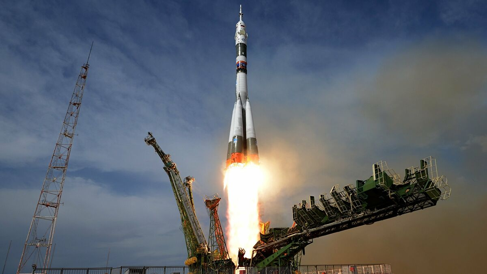

Raketa Sojuz je potrošno lansirno vozilo korišteno nekada
u SSSR i danas u Rusiji. Dizajner i proizvođač rakete je Raketna
Korporacija Korolev smještena u današnjoj Rusiji, u gradu Samari.
Izvedenice ove rakete danas se koristi za lansiranje letjelica s
ljudskom posadom tipa Sojuz, teretnih letjelica za svemirske
postaje tipa Progress i komercijalnih satelita. Raketa Sojuz je
prvi put predstavljena 1966. kao evolucija rakete Vostok, bazirane
na R-7 interkontinetalnom balastičkom projektilu. U početku je imala
tri stupnja, a kasnijem razvojem nastala je i verzija Molniya s četiri
stupnja. Zbog pouzdanosti i ekonomičnosti postala je osnova raketa iz
obitelji Sojuz, danas najkorištenijih raketa nosača s više od 1700
lansiranja, što nadmašuje sve današnje i povijesne rakete nosače.
Raketa je lansirana 30 puta, od toga 28 puta uspješno u razdoblju
od 1966. do 1975. Korištena je i za lansiranje 19 letjelica Sojuz s
kozmonautima u orbitu. U nisku orbitu je mogla ponijeti 6.450 kg |
 |